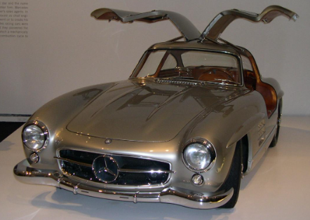
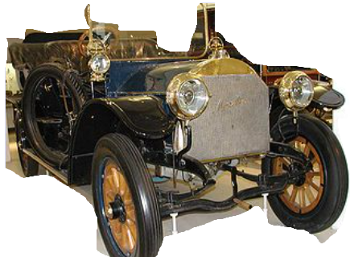

Mercedes-Benz (გერმანულად: [mɛɐ̯ˈtseːdəsˌbɛnts, -dɛs-]),[4][5] ან უბრალოდ Mercedes, — ავტომობილების გერმანული ბრენდი და – როგორც Mercedes-Benz AG– 2019 წლიდან Daimler AG-ის შვილობილი კომპანია.[1] Mercedes-Benz ცნობილია მდიდრული და კომერციული ავტომობილების წარმოებით.[შენიშვნა 2] სათავო ო ფისი მდებარეობს შტუტგარტში, ბადენ-ვიურტემბერგი. Mercedes-Benz-ის ბრენდის პირველი ავტომობილი 1926 წელს იქნა წარმოებული. 2018 წელს Mercedes-Benz პრემიუმ ავტომობილების უმსხვილესი გამყიდველი იყო. მან 2,31 მილიონი სამგზავრო ავტომობილი გაყიდა.[6] 1906 წლის მერსედეს-სიმპლექსი, გერმანიის მუზეუმი 1957 წლის მერსედეს-ბენცი 300Sc კაბრიოლეტი 1959 წლის მერსედეს-ბენცი W120 მოდელი 180 მერსედეს-ბენცი, S-კლასი მერსედეს-ბენცი ვარიო ბენედიქტე XVI მერსედეს-ბენცის პოპემობილით სან-პაულუს ქუჩებში ისტორია მერსედეს-ბენცი გერმანული ავტოგიგანტის - „დაიმლერის ავტოკორპორაციის“ (Daimler AG) ლეგენდარული ბრენდია. ინოვაციების დაუოკებელი ძიების შედეგად „მერსედეს-ბენცი“ იქცა მსოფლიოში პირველ საავტომობილო მარკად, ამ სამარკო ნიშნის ქვეშ იგულისხმება კომფორტიული, მდგრადი და ელეგანტური ავტომობილი.დღეისთვის მერსედეს-ბენცის სამარკო ნიშნის ქვეშ მზადდება ფართო არეალის და დანიშნულების ტრანსპორტი: სამგზავრო მსუბუქი ავტომობილები, სამგზავრო/სამხედრო მსუბუქი ყველგანმავალი ავტომობილები, სატვირთო ავტომობილები, ავტობუსები, მინი-ვენები და ა.შ. ბრენდის სახელი - „მერსედეს-ბენცი“ წარმოიშვა 1926 წელს ორი ბრენდის – მერსედესისა (დაიმლერ-ძრავების საზოგადოება DMG) და ბენცის (ბენცი და კომპანია Benz & Co.) შეერთებით.
  back